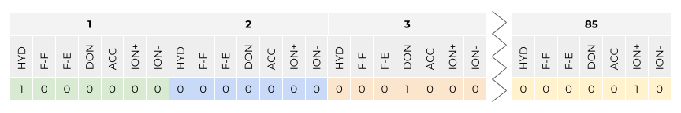

T026 · Kinase similarity: Interaction fingerprints¶
Note: This talktorial is a part of TeachOpenCADD, a platform that aims to teach domain-specific skills and to provide pipeline templates as starting points for research projects.
Authors:
Dominique Sydow, 2021, Volkamer lab, Charité
Talia B. Kimber, 2021, Volkamer lab, Charité
Andrea Volkamer, 2021, Volkamer lab, Charité
Aim of this talktorial¶
We will assess the similarity between a set of kinases based on detected protein-ligand interactions in available complex structures. The KLIFS interaction fingerprint (IFP), which describes the interactions seen in a structurally resolved kinase-ligand complex, will be used in this exercise.
Note: We focus on similarities between orthosteric kinase binding sites; similarities to allosteric binding sites are not covered.
Contents in Theory¶
Kinase dataset
Kinase similarity descriptor: KLIFS interaction fingerprint
Fetching KLIFS data with
opencadd.databases.klifs
Contents in Practical¶
Define the kinases of interest
Retrieve and preprocess data
Set up a remote KLIFS session
Fetch all structures describing these kinases
Filter structures
Fetch the structures’ IFPs (if available)
Merge structural and IFP data
Show kinase coverage
Compare structures
Prepare IFPs as
numpyarrayCalculate pairwise Jaccard distances
Map structure to kinase distance matrix
Save kinase distance matrix
References¶
Kinase dataset: Molecules (2021), 26(3), 629
Protein Data Bank
PDB URL: http://www.rcsb.org/
PDB database: Acta Cryst. (2002), D58, 899-907 and Structure (2012), 20(3), 391-396
KLIFS
KLIFS URL: https://klifs.net/
KLIFS database: Nucleic Acid Res. (2020), 49(D1), D562-D569
KLIFS binding site definition and interaction fingerprint calculation: J. Med. Chem. (2014), 57(2), 249-277
Interaction fingerprint (IFP): J. Chem. Inf. Model. (2007), 71(1), 195-207
opencadd, a Python library for structural cheminformaticsGitHub repository: https://github.com/volkamerlab/opencadd
Documentation: https://opencadd.readthedocs.io
Theory¶
Kinase dataset¶
We use the kinase selection as defined in Talktorial T023.
Kinase similarity descriptor: KLIFS interaction fingerprints¶
Interaction fingerprints (IFPs) encode the binding mode of a ligand in a binding site, i.e., the protein-ligand interactions that are present in a structurally resolved complex. If a ligand can form similar interaction patterns in proteins other than its designated protein (off- vs. on-target), it is possible that this ligand will cause unintended side effects. Knowledge about similarities between proteins can therefore help to avoid such off-target effects; or to exploit the known similarities for polypharmacology effects where one ligand could intentionally target multiple proteins at once.
In this talktorial, we are interested in assessing the similarity between a set of kinases based on the similarity between the binding modes of the co-crystallized ligands. We will make use of the KLIFS IFP: For each kinase structure that is co-crystallized with a ligand, all interactions between the \(85\) KLIFS pocket residues (see more details in Talktorial T023) and the ligand are described using the IFP by Marcou and Rognan (JCIM (2007), 71(1), 195-207).
This is how the IFP is explained in the respective KLIFS publication J. Med. Chem. (2014), 57(2), 249-277:
For each amino acid in the catalytic cleft, seven types of protein−ligand interactions are determined. The presence of a certain type of interaction results in the type-setting of a “1” in the bit-string; otherwise a “0” is used to indicate the absence of the interaction. The following seven types of interactions are summarized in one bit-string; bit 1 = hydrophobic contact (HYD); bit 2 = face to face aromatic interactions (F−F); bit 3 = face to edge aromatic interactions (F−E); bit 4 = protein H-bond donor (DON); bit 5 = protein H- bond acceptor (ACC); bit 6 = protein cationic interactions (ION+), and bit 7 = protein anionic interactions (ION−).
This results in a \(85 \times 7 = 595\) bit vector. Since the binding site is aligned across all kinases, each bit position in this IFP can be directly compared across all IFPs in KLIFS. This is what we will do in the practical part of this tutorial.
Figure 1: KLIFS interaction fingerprint (IFP) definition: Seven interaction types are detected between each of a kinase structure’s \(85\) pocket residues and a co-crystallized ligand. Interaction types include: hydrophobic contact (HYD), face to face aromatic interactions (F−F), face to edge aromatic interactions (F−E), protein H-bond donor (DON), protein H-bond acceptor (ACC), protein cationic interactions (ION+), and protein anionic interactions (ION−). Figure by Dominique Sydow, adapted from: J. Med. Chem. (2014), 57(2), 249-277.
Fetching KLIFS data with opencadd.databases.klifs¶
opencadd is a Python library for structural cheminformatics developed by the Volkamer lab at the Charité in Berlin. This library is a growing collection of modules that help facilitate and standardize common tasks in structural bioinformatics and cheminformatics. Today, we will use the module opencadd.databases.klifs, which allows us to fetch the KLIFS IFP as a pandas DataFrame.
GitHub repository: https://github.com/volkamerlab/opencadd
Documentation: https://opencadd.readthedocs.io
For more information about this library and the KLIFS OpenAPI, please refer to Talktorial T012.
Practical¶
[1]:
from pathlib import Path
import numpy as np
import pandas as pd
import matplotlib.pyplot as plt
import seaborn as sns
from sklearn.metrics import pairwise_distances
from scipy.spatial import distance
from opencadd.databases.klifs import setup_remote
[2]:
HERE = Path(_dh[-1])
DATA = HERE / "data"
[3]:
configs = pd.read_csv(HERE / "../T023_what_is_a_kinase/data/pipeline_configs.csv")
configs = configs.set_index("variable")["default_value"]
DEMO = bool(int(configs["DEMO"]))
N_STRUCTURES_PER_KINASE = int(configs["N_STRUCTURES_PER_KINASE"])
N_CORES = int(configs["N_CORES"])
print(f"Run in demo mode: {DEMO}")
if not DEMO:
if N_STRUCTURES_PER_KINASE > 0:
print(f"Number of structures per kinase: {N_STRUCTURES_PER_KINASE}")
else:
print(f"Number of structures per kinase: all available structures")
print(f"Number of cores used: {N_CORES}")
# NBVAL_CHECK_OUTPUT
Run in demo mode: True
Define the kinases of interest¶
Let’s load the kinase selection as defined in Talktorial T023.
[4]:
kinase_selection_df = pd.read_csv(HERE / "../T023_what_is_a_kinase/data/kinase_selection.csv")
kinase_selection_df
# NBVAL_CHECK_OUTPUT
[4]:
| kinase | kinase_klifs | uniprot_id | group | full_kinase_name | |
|---|---|---|---|---|---|
| 0 | EGFR | EGFR | P00533 | TK | Epidermal growth factor receptor |
| 1 | ErbB2 | ErbB2 | P04626 | TK | Erythroblastic leukemia viral oncogene homolog 2 |
| 2 | PI3K | p110a | P42336 | Atypical | Phosphatidylinositol-3-kinase |
| 3 | VEGFR2 | KDR | P35968 | TK | Vascular endothelial growth factor receptor 2 |
| 4 | BRAF | BRAF | P15056 | TKL | Rapidly accelerated fibrosarcoma isoform B |
| 5 | CDK2 | CDK2 | P24941 | CMGC | Cyclic-dependent kinase 2 |
| 6 | LCK | LCK | P06239 | TK | Lymphocyte-specific protein tyrosine kinase |
| 7 | MET | MET | P08581 | TK | Mesenchymal-epithelial transition factor |
| 8 | p38a | p38a | Q16539 | CMGC | p38 mitogen activated protein kinase alpha |
Retrieve and preprocess data¶
Now, we query the KLIFS database using the opencadd.databases.klifs module to generate our IFP dataset.
Set up a remote KLIFS session¶
[5]:
from opencadd.databases.klifs import setup_remote
[6]:
klifs_session = setup_remote()
Fetch all structures describing these kinases¶
[7]:
# Get list of kinase names
kinase_names = kinase_selection_df["kinase_klifs"].to_list()
# Get all available structures for these kinases
structures_df = klifs_session.structures.by_kinase_name(kinase_names=kinase_names)
# Keep only relevant columns
structures_df = structures_df[
[
"structure.klifs_id",
"kinase.klifs_name",
"species.klifs",
"structure.dfg",
"structure.resolution",
"structure.qualityscore",
]
]
print(f"Number of structures: {len(structures_df)}")
print("Kinases:", *structures_df["kinase.klifs_name"].unique())
Number of structures: 2523
Kinases: CDK2 p38a EGFR ErbB2 MET LCK KDR BRAF p110a
Filter structures¶
We filter the structures by different criteria:
Species: human
Conformation: DFG-in (the active kinase conformation)
Resolution: \(\le 3\) Angström
Quality score*: \(\ge 6\)
* The KLIFS quality score takes into account the quality of the alignment, as well as the number of missing residues and atoms. A higher score indicates a better structure quality.
[8]:
structures_df = structures_df[
(structures_df["species.klifs"] == "Human")
& (structures_df["structure.dfg"] == "in")
& (structures_df["structure.resolution"] <= 3)
& (structures_df["structure.qualityscore"] >= 6)
]
print(f"Number of structures: {len(structures_df)}")
print("Kinases:", *structures_df["kinase.klifs_name"].unique())
Number of structures: 1657
Kinases: CDK2 p38a EGFR ErbB2 MET LCK KDR BRAF p110a
Save the structure KLIFS IDs for the next step.
[9]:
structure_klifs_ids = structures_df["structure.klifs_id"].to_list()
print(f"Number of structures: {len(structure_klifs_ids)}")
Number of structures: 1657
Note for demo mode: To make it easier for us to maintain the talktorials, we will now load a set of frozen structure KLIFS IDs (2021-08-23) and continue to work with those.
Note for non-demo mode: Did you specify N_STRUCTURES_PER_KINASE in the configuration file? If you e.g. set a value of 3, we will select in the following the top 3 structures per kinase in terms of resolution and KLIFS quality score.
[10]:
if DEMO:
# Load frozen dataset
print("Notebook is run in demo mode - load frozen structure set.")
structure_klifs_ids = pd.read_csv(DATA / "frozen_structure_klifs_ids.csv")[
"structure.klifs_id"
].to_list()
structures_df = structures_df[
structures_df["structure.klifs_id"].isin(structure_klifs_ids)
].copy()
else:
if N_STRUCTURES_PER_KINASE > 0:
print(f"Select {N_STRUCTURES_PER_KINASE} structures per kinase for downstream analysis.")
# Sort structures by kinase and quality
structures_df = structures_df.sort_values(
by=["kinase.klifs_name", "structure.resolution", "structure.qualityscore"],
ascending=[True, True, False],
)
# Reduce number of structures per kinase
structures_df = structures_df.groupby("kinase.klifs_name").head(N_STRUCTURES_PER_KINASE)
structure_klifs_ids = structures_df["structure.klifs_id"].to_list()
else:
print(f"Use all available structures per kinase for downstream analysis.")
print(f"Number of structures: {structures_df.shape[0]}")
# NBVAL_CHECK_OUTPUT
Notebook is run in demo mode - load frozen structure set.
Number of structures: 1620
Fetch the structures’ IFPs (if available)¶
We fetch the IFPs for the set of structures. Not all structures will have an IFP because not all structures have a co-crystallized ligand.
[11]:
ifps_df = klifs_session.interactions.by_structure_klifs_id(structure_klifs_ids)
print(f"Number of structures with IFPs: {len(ifps_df)}")
ifps_df.head()
Number of structures with IFPs: 1466
[11]:
| structure.klifs_id | interaction.fingerprint | |
|---|---|---|
| 0 | 775 | 0000000000000010000000000000000000000000000000... |
| 1 | 777 | 0000000000000010000001000000000000000000000000... |
| 2 | 778 | 0000000000000010000000000000000000000000000000... |
| 3 | 779 | 0000000000000010000001000000000000000000000000... |
| 4 | 782 | 0000000000000010000001000000000000000000000000... |
Merge structural and IFP data¶
[12]:
structures_with_ifps_df = ifps_df.merge(structures_df, on="structure.klifs_id", how="inner")
print(f"Number of structures with IFPs: {len(structures_with_ifps_df)}")
structures_with_ifps_df.head()
# NBVAL_CHECK_OUTPUT
Number of structures with IFPs: 1466
[12]:
| structure.klifs_id | interaction.fingerprint | kinase.klifs_name | species.klifs | structure.dfg | structure.resolution | structure.qualityscore | |
|---|---|---|---|---|---|---|---|
| 0 | 775 | 0000000000000010000000000000000000000000000000... | EGFR | Human | in | 3.00 | 8.0 |
| 1 | 777 | 0000000000000010000001000000000000000000000000... | EGFR | Human | in | 2.64 | 6.8 |
| 2 | 778 | 0000000000000010000000000000000000000000000000... | EGFR | Human | in | 1.90 | 8.0 |
| 3 | 779 | 0000000000000010000001000000000000000000000000... | EGFR | Human | in | 2.80 | 8.0 |
| 4 | 782 | 0000000000000010000001000000000000000000000000... | EGFR | Human | in | 1.70 | 8.0 |
Show kinase coverage¶
Let’s get the number of structures that describe our kinases (kinase coverage).
[13]:
# Use pandas' groupby method to count the number of structures (rows) per kinase
n_structures_per_kinase = structures_with_ifps_df.groupby("kinase.klifs_name").size().sort_values()
n_structures_per_kinase
# NBVAL_CHECK_OUTPUT
[13]:
kinase.klifs_name
ErbB2 4
KDR 6
LCK 30
p110a 45
BRAF 57
MET 95
p38a 127
EGFR 339
CDK2 763
dtype: int64
Let’s plot the results.
[14]:
fig, ax = plt.subplots()
n_structures_per_kinase.plot(kind="barh", ax=ax)
ax.set_xlabel("Number of structures")
ax.set_ylabel("Kinase name")
for i, value in enumerate(n_structures_per_kinase):
ax.text(value, i, str(value), va="center")
We see that our dataset is highly imbalanced. While some kinases are structurally resolved very often, other kinases are not. We will have to keep this in mind when interpreting our results later.
Compare structures¶
We will make a pairwise comparison of the structures’ IFP using the Tanimoto/Jaccard distance as implemented in sklearn.metrics.pairwise_distances, which uses under the hood the method scipy.spatial.distance.
Prepare IFPs as numpy array¶
KLIFS deposits the IFP as a string of 0’s and 1’s. We have to convert the IFPs to an array of boolean vectors (required by scipy.spatial.distance to be able to use the Jaccard distance). Each row in this array refers to one IFP, each columns to one of the IFP’s features.
[15]:
# This is the KLIFS format of the IFP (structure KLIFS ID and kinase name set as index)
ifp_series = structures_with_ifps_df.set_index(["structure.klifs_id", "kinase.klifs_name"])[
"interaction.fingerprint"
]
ifp_series.head()
# NBVAL_CHECK_OUTPUT
[15]:
structure.klifs_id kinase.klifs_name
775 EGFR 0000000000000010000000000000000000000000000000...
777 EGFR 0000000000000010000001000000000000000000000000...
778 EGFR 0000000000000010000000000000000000000000000000...
779 EGFR 0000000000000010000001000000000000000000000000...
782 EGFR 0000000000000010000001000000000000000000000000...
Name: interaction.fingerprint, dtype: string
[16]:
# Cast "0" and "1" to boolean False and True
ifp_series = ifp_series.apply(lambda x: [True if i == "1" else False for i in x])
ifp_series.head()
# NBVAL_CHECK_OUTPUT
[16]:
structure.klifs_id kinase.klifs_name
775 EGFR [False, False, False, False, False, False, Fal...
777 EGFR [False, False, False, False, False, False, Fal...
778 EGFR [False, False, False, False, False, False, Fal...
779 EGFR [False, False, False, False, False, False, Fal...
782 EGFR [False, False, False, False, False, False, Fal...
Name: interaction.fingerprint, dtype: object
[17]:
# Convert to numpy array
ifps_array = np.array(ifp_series.to_list())
ifps_array
# NBVAL_CHECK_OUTPUT
[17]:
array([[False, False, False, ..., False, False, False],
[False, False, False, ..., False, False, False],
[False, False, False, ..., False, False, False],
...,
[False, False, False, ..., False, False, False],
[False, False, False, ..., False, False, False],
[False, False, False, ..., False, False, False]])
Calculate pairwise Jaccard distances¶
The Jaccard distance, defined below, is often used in case of binary fingerprints:
[18]:
structure_distance_matrix_array = pairwise_distances(ifps_array, metric="jaccard")
[19]:
# Create DataFrame with structure KLIFS IDs as index/columns
structure_klifs_ids = ifp_series.index.get_level_values(0)
structure_distance_matrix_df = pd.DataFrame(
structure_distance_matrix_array, index=structure_klifs_ids, columns=structure_klifs_ids
)
print(f"Structure distance matrix size: {structure_distance_matrix_df.shape}")
print("Show matrix subset:")
structure_distance_matrix_df.iloc[:5, :5]
# NBVAL_CHECK_OUTPUT
Structure distance matrix size: (1466, 1466)
Show matrix subset:
[19]:
| structure.klifs_id | 775 | 777 | 778 | 779 | 782 |
|---|---|---|---|---|---|
| structure.klifs_id | |||||
| 775 | 0.000000 | 0.720000 | 0.542857 | 0.500000 | 0.483871 |
| 777 | 0.720000 | 0.000000 | 0.741935 | 0.500000 | 0.703704 |
| 778 | 0.542857 | 0.741935 | 0.000000 | 0.696970 | 0.411765 |
| 779 | 0.500000 | 0.500000 | 0.696970 | 0.000000 | 0.655172 |
| 782 | 0.483871 | 0.703704 | 0.411765 | 0.655172 | 0.000000 |
Map structure to kinase distance matrix¶
Note: So far we compared individual structures, but we want to compare kinases (which can be represented by several structures, as plotted above).
First, as an intermediate step, we will create a structure distance matrix but — instead of labeling the data with structure KLIFS IDs — we use the corresponding kinase name.
[20]:
# Copy distance matrix to kinase matrix
kinase_distance_matrix_df = structure_distance_matrix_df.copy()
# Replace structure KLIFS IDs with the structures' kinase names
kinase_names = ifp_series.index.get_level_values(1)
kinase_distance_matrix_df.index = kinase_names
kinase_distance_matrix_df.columns = kinase_names
print("Show matrix subset:")
kinase_distance_matrix_df.iloc[:5, :5]
# NBVAL_CHECK_OUTPUT
Show matrix subset:
[20]:
| kinase.klifs_name | EGFR | EGFR | EGFR | EGFR | EGFR |
|---|---|---|---|---|---|
| kinase.klifs_name | |||||
| EGFR | 0.000000 | 0.720000 | 0.542857 | 0.500000 | 0.483871 |
| EGFR | 0.720000 | 0.000000 | 0.741935 | 0.500000 | 0.703704 |
| EGFR | 0.542857 | 0.741935 | 0.000000 | 0.696970 | 0.411765 |
| EGFR | 0.500000 | 0.500000 | 0.696970 | 0.000000 | 0.655172 |
| EGFR | 0.483871 | 0.703704 | 0.411765 | 0.655172 | 0.000000 |
A kinase pair can be represented by many different structure pairs which are associated with different distance values.
For example (in the demo mode), if we compare all EGFR structure to each other, the range of distance values is already quite high because we can observe different binding modes of the co-crystallized ligands.
[21]:
if DEMO:
example = "EGFR"
else:
example = kinase_selection_df["kinase_klifs"][0]
# Select EGFR-EGFR structure pairs only
D = kinase_distance_matrix_df.loc[example, example]
# Extract all pairwise distances without identical structure pairs
# = lower triangular matrix without the diagonal
D_condensed = distance.squareform(D)
# Plot pairwise distances
plt.boxplot(D_condensed)
plt.xticks([1], [example])
plt.ylabel("Distance between structures")
plt.show()
In this talktorial, we will consider per kinase pair the two structures that show the most similar binding mode for their co-crystallized ligands. Hence, we select the structure pair with the minimum IFP distance as representative for a kinase pair.
[22]:
# We unstack the matrix (each pairwise comparison in a single row)
# We group by kinase names (level=[0, 1] ensures that the order of the kinases is ignored
# We take the minimum value in each kinase pair group
# We unstack the remaining data points
kinase_distance_matrix_df = (
kinase_distance_matrix_df.unstack().groupby(level=[0, 1]).min().unstack(level=1)
)
kinase_distance_matrix_df.index.name = None
kinase_distance_matrix_df.columns.name = None
[23]:
print(
f"Structure matrix of shape {structure_distance_matrix_df.shape} "
f"reduced to kinase matrix of shape {kinase_distance_matrix_df.shape}."
)
# NBVAL_CHECK_OUTPUT
Structure matrix of shape (1466, 1466) reduced to kinase matrix of shape (9, 9).
[24]:
# Show matrix with background gradient
cm = sns.light_palette("green", as_cmap=True)
kinase_distance_matrix_df.style.background_gradient(cmap=cm).format("{:.3f}")
[24]:
| BRAF | CDK2 | EGFR | ErbB2 | KDR | LCK | MET | p110a | p38a | |
|---|---|---|---|---|---|---|---|---|---|
| BRAF | 0.000 | 0.300 | 0.278 | 0.394 | 0.364 | 0.320 | 0.368 | 0.500 | 0.333 |
| CDK2 | 0.300 | 0.000 | 0.111 | 0.452 | 0.238 | 0.190 | 0.133 | 0.348 | 0.278 |
| EGFR | 0.278 | 0.111 | 0.000 | 0.258 | 0.238 | 0.167 | 0.227 | 0.381 | 0.174 |
| ErbB2 | 0.394 | 0.452 | 0.258 | 0.000 | 0.406 | 0.419 | 0.382 | 0.571 | 0.258 |
| KDR | 0.364 | 0.238 | 0.238 | 0.406 | 0.000 | 0.059 | 0.333 | 0.533 | 0.043 |
| LCK | 0.320 | 0.190 | 0.167 | 0.419 | 0.059 | 0.000 | 0.250 | 0.375 | 0.190 |
| MET | 0.368 | 0.133 | 0.227 | 0.382 | 0.333 | 0.250 | 0.000 | 0.429 | 0.353 |
| p110a | 0.500 | 0.348 | 0.381 | 0.571 | 0.533 | 0.375 | 0.429 | 0.000 | 0.474 |
| p38a | 0.333 | 0.278 | 0.174 | 0.258 | 0.043 | 0.190 | 0.353 | 0.474 | 0.000 |
Note: Since this is a distance matrix, lighter colors indicate similarity, darker colors dissimilarity.
Save kinase distance matrix¶
[25]:
kinase_distance_matrix_df.to_csv(DATA / "kinase_distance_matrix.csv")
Discussion¶
In this talktorial, we have used the KLIFS interaction fingerprints, which describe binding modes of co-crystallized ligands in kinase structures, to assess kinase similarity.
We have to keep two elements in mind:
Interaction fingerprints may miss important key interactions if the co-crystallized ligand(s) simply do not form the interaction but other ligands might.
We only compare here the two closest binding modes per kinase pair, although we have — for kinases such as EGFR and CDK2 — much more data available on binding modes. As an alternative, one could instead aggregate the information from multiple binding modes per kinase in a fingerprint that reports all interactions seen in any structure. However, this approach has its own drawbacks: Some kinases have much higher coverage than others, leading to an imbalance in information content.
The kinase distance matrix above will be reloaded in Talktorial T028, where we compare kinase similarities from different perspectives, including the interaction perspective we have talked about in this talktorial.
Quiz¶
What are the advantages and disadvantages of describing kinase similarity with interaction fingerprints?
Why is the structural coverage between kinases so different?
At one point, we are mapping structure pairs to kinase pairs. We use here the minimum structure distance. What other mapping strategies can you think of? What advantages and disadvantages could they have?